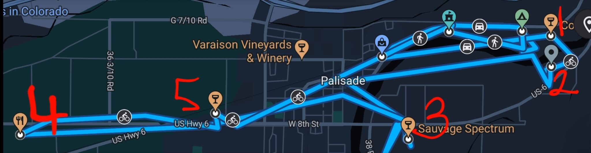
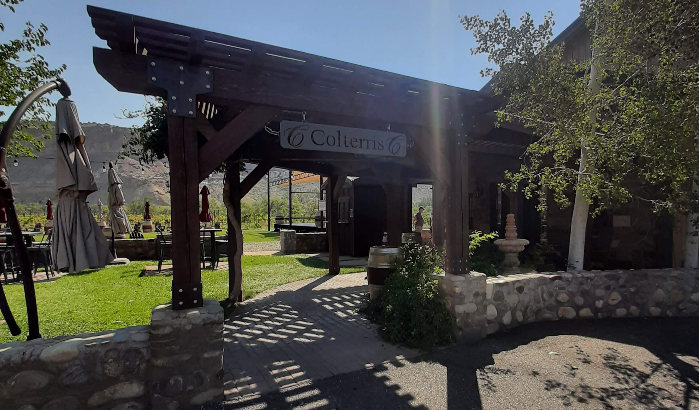
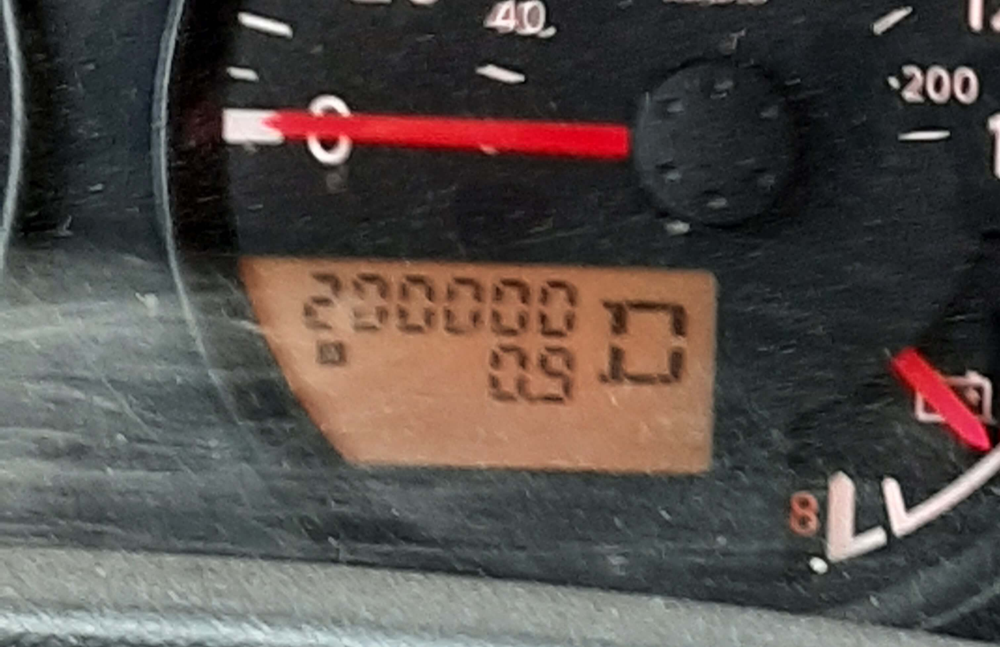

Palisade, CO
Camping and Vineyard Hopping
As much as I feel like a sucker for paying to sleep outside,
the campsite was worth it. Fortunately, I was able to drown my inner
cheapskate with lots of wine, lots and lots of wine!

Let me preface this article by saying that I'm more of a 'beer drinking, dive bar' kind of guy, but what the hell?! I had a crazy hair growing out of my ass and decided to go to the Colorado wine country over on the western slope of the state. So, I went westward by my lonesome self like a cowboy riding off into the sunset, blah blah blah, cliché this and that. People were definitely giving me looks of confusion, which I understand. I definitely don't fall within the target demographic. Too bad I'm not a smooth talker though, because there were a lot of attractive women.
Before I digress, here's a table summarizing the boojee booze makers I visited and other trip expenses:
Table Summary
scroll left/right on mobile to see whole table
| Name/Website | Description | Price | Other Purchases | Total Paid | |
|---|---|---|---|---|---|
| 1 | Palisade Basecamp | The place where I camped. They have tent sites and RV sites. | $45-80 per night | Bought an overpriced 6pack for about 12 bucks | $185.48 includes 2 night reservation, taxes and beers |
| 2 | Paddle Board Adventure Company | Rental shop where I rented an eBike for the day. They also have a bar. | $40/4hrs-$58/8hrs | Spent some time at the bar after my day on the eBike | $83.89 includes tip, taxes, bar tab |
| 3 | Colterris Wines | The first place I stopped, because it was right next door to the campsite. | $15/wine tasting flight of 5 | Bought one of their Malbecs ($28) | $49.80 includes taxes and tip |
| 4 | Clark & Co's Distilling | F***ing moonshine baby. | $18/moonshine tasting flight of 4 | Had an exquisite gin and tonic ($10) and bought a bottle of their gin ($40). | $75.86 includes taxes and tip |
| 5 | Sauvage Spectrum | Loved the pole barn wine tasting area. It was a super casual vibe, more my speed. | $15ish/wine tasting flight | Bought two bottles ($62) because they waive the wine tasting fee when you buy two | $71.80 includes taxes and tip |
| 6 | Maison La Belle Vie | Frenchy. I saved my appetite for this place. | $19/wine tasting flight of 4 | Got some baked brie ($13), some macarons ($9), two bottles of wine ($61) | $107.38 includes taxes and tip |
| 7 | Plum Creek Winery | Best price! and I fell in love with a thing called Pet Nat | $10/wine tasting flight of 5 (with generous pours!) | Bought two more bottles ($46) | $71.21 includes taxes and tip |
| 8 | gas | about 460 miles roundtrip from Denver | ~$120 | ||
| 9 | Food stops | I like my fast food, and there was a huge backup on I-70 so I also stopped in Georgetown for a wee bit on my way back. | ~$75 | ||
| Total | ~$840.42 | ||||
The wineries and distillery are listed in order of when I visited them. You may have noticed that I got a
little looser with my spending as the day progressed. Not sure why that was. I'm sure the
same trip could be done cheaper, especially if one doesn't buy a bottle, or two, at each place... and ate
packed food and drove a more fuel effiecient vehicle and split the camp reservation with others and so on
and so forth. Whatever
Palisade Basecamp Review


My Route
 What was my route like for this impromptu wine hopping tour? Well, fortunately for us Google is super creepy and tracks that for me without being asked. So, at least we have this handy map at the expense of my privacy... hooray invasive surveillance! OK, enough sarcasm from me, let's get back to talking about the route. Initially, I thought I could walk this. Oh, how naive I was. Fortunately, someone corrected me of my ignorance and suggested renting an eBike. Boy was I grateful for that bit of advice. The town of Palisade is much more spread out than the local brochure map leads on to believe.
Paddle Board Adventure Company Review
Some form of transport is highly recommended and apparently there is a thriving pedi-cab industry there if you don't want to rent anything. I also saw horse carriage rides and the typical drunk redneck driving a diesel-dualy truck if you're feeling adventurous and wanna try hitchhiking (I'm kidding about that last one). You got options is my point.
However, I had a lot of fun with the eBike and it saved me from sweating my ass off compared with a non
electric bike. I believe there's three places in town that do eBike rentals but only one place had one left
for me. Apparently, it's a popular option so if you consider that, then maybe reserve yours in advance. The
place I rented from also does paddle boards and a bunch of other stuff. They have a bar so I also imbibed
in some beer after my wine hopping tour. The shop keeper/bartender was super friendly and knowledgable. She
gave me a bunch of great recommendations and helped me plan the route I took. One change I would have made
is to stay closer to the downtown area because that would have saved me more time to visit more wineries.
Colterris Wines Review
 This place had it all: epic views, concert stage, elegant patio, nextdoor to my campsite, and pleasant seating next to the vineyard. Also, I didn't realize this till I got there but I went to high school with one of the sons of the owners. Don't worry, I didn't get any preferential treatment. They do give you a little wine glass charm and souvenir wine tasting glass after successfully completing the wine flight, though. Don't worry it's not tough to complete. The wine is pretty good, in my amateur opinion.
While this winery was one of the fanciest ones I visited that day, it was also one of the more expensive places. So, there's something to consider, but I would say the location and helpful staff meritted the prices. With that said I wouldn't buy a single glass because they come at $20 each, but their canned wine (what a concept) is really popular and more reasonably priced and quite drinkable. One of them is so drinkable it has been nicknamed the patio pounder. What a suggestive name, right? But that makes it all the more enticing!
Clark & Co's Distilling Review
Getting here was a short little scoot on the eBike from Colterris. It's a scenic ride over the bridge, on
the otherside of the Colorado River. Clearly, I deviated from the wine tour theme, since this is a distillery.
So right off the bat I ordered a g&t and much to my enjoyment their gin is a magical color changing gin when mixed with citrus because of the butterfly pea infusion. Obviously, I bought a bottle to take home! After the g&t, I ordered a flight of moonshine. Yeah baby, you read right. They line up four shots of moonshine in the flavors of your choosing. They're not harsh and they go down smooth. I tried raspberry, peach, blueberry, and prickly pear. Hmmm yummy! I think raspberry was my favorite, but I enjoyed them all. They also serve food so you don't have to drink on an empty belly, but I had a large breakfast already so I was still full from that.
Sauvage Spectrum Review
Their wine tasting flights are around 15 dollars and you can get up to 6. I got 5, and this is where I was introduced to a Pét-Nat (short for pétillant naturel, bet you can't guess what language that is). Anyway, I guess these are already pretty popular, but in case you don't know, this is a type of sparkling wine. A wilder version of Champagne, if you will. This type of wine kinda reminded me of a boozy kombucha. My tasting flight had their Pét-Nat white, Pét-Nat magenta, Pét-Nat skins, Grüner Veltliner, and the Reserve Red Blend. I liked the Pét-Nat skins and Reserve Red Blend the most.
Maison La Belle Vie Review
Ooh la la I went here to get a sense of nostalgia from when I studied in France for a year. While I was disappointed that I didn't run into anyone that spoke French (quel dommage!), they made up for it with amazing quality of food. Vraiment authentique à mon avis!
I'll be honest I was a little hangry at this point of my self-guided tour. When I had to ask twice for
silverware and water I was a little short with my waitress and the surrounding conversations of the other
patrons sounded like annoying valley-girl babble. It's amazing how a little food in the belly can change
your demeanor. Once I ate the baked brie and imbibed on my wine flight (white blend, merlot blend, Reserve
Marchenal Foch, and the Reserve Syrah), I was back to my happy-go-lucky self.
Plum Creek Winery Review
First impression, I felt like I walked into the winery version of a Cracker Barrel with knick-knacks galore.
I enjoyed it though because this also brought me nostalgia of going on roadtrips when I was younger.
They too had some good Pét-Nat. My favorite Pét-Nat of the day came from here. They call it the Aromella.
It was quite possibly my favorite of the day, which at this point of my tour is saying something after all
the tasting I had done. My flight here consisted of: Aromella, Palisade Festival, Palisade Rosé, Palisade Red and Cabernet Sauvignon.
2007 Nissan Frontier Review

Last review I want to make is more of a token of gratitude to my dad. While on this trip, I reached
200,000 miles on my truck (got it at 79,000 miles). Reaching this milestone made me think of him because he
got me this truck as a graduation present, and it's carried me many thousands of miles. Without this gift,
and my dad just being there in my life in general, my life would have been a lot different. So I'm really
grateful for him and his support throughout my life. Thanks dad, you're an asshole sometimes, but I love you!
Thanks again for the truck, she still runs great!
Conclusion
All in all I had a lot of fun. Would I do it again? Absolutely! There were a lot of things I wanted to see, but
didn't have enough time for, like the lavendar farms and the other 20 wineries in the area. However, I would also go to any of the places I already visited a second time.
So there's that, here's the rest of the photos:
Extra Photos
Thanks for reading! If you made it to the end and were even mildly entertained by this piece,
let me ask a few questions:
- were you absolutely bored reading this?
- have you never drank wine before?
- would this article be totally unhelpful in planning for a trip to Palisade?
If you answered "no" to any of the above questions and would like to support independent, candid reviews then please consider supporting this site by sending a donation to any of the following addresses:
-venmo, cashapp, bitcoin/ethereum/other cryptos, paypal, etc

1FpjmV5RxyChK599
sb2HH7X5BU4JtPt9Xz

0xb02789ECbFc44fC9e532
937886754Fd5819Bfa09
0xd19AB114B30d2cEe99D
9C545901c1539D59f99Ea